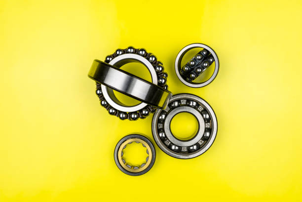
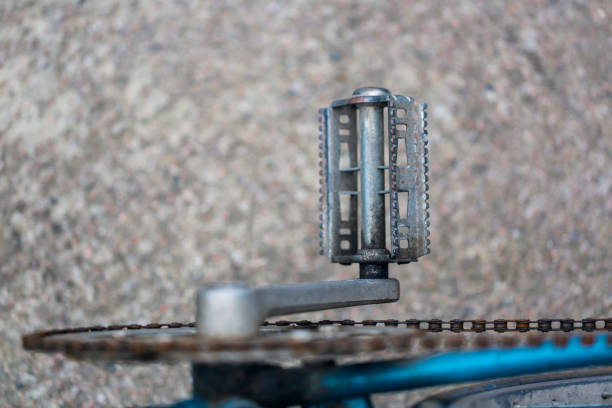
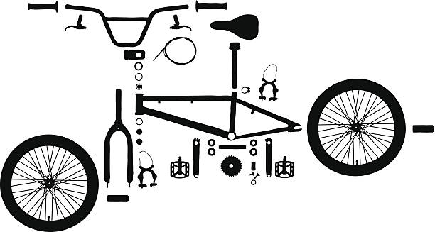
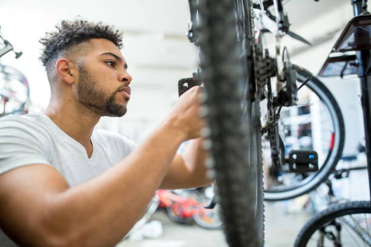
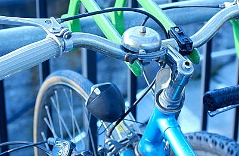

This is the continuation of the first How To Maintain your bike article.
In this article, we are going to continue to share how you can improve the lifespan of your bicycle to ensure that you get the best value for your money.
-
Inspect Your Bearings
Your bearings are the boiler plate on which your other bike parts like the wheels, move. They should be in top shape to ensure everything is moving seamlessly. Give the bearings between your pedals ( called the bottom bracket), and hubs a gentle spin or shake. If they're grinding like a rusty old windmill, it may be time to change them.
Your bottom bracket also should not feel loose or shake when your toggle it from side to side. If it does.. well.. you know what I will say next... Change them.. Check the bearings in the headset and hubs for smooth rotation. Consider repacking them with fresh grease if your bike has seen better days, but usually they will be fine. With bearings that spin as smooth as butter, your bike will glide like it's on a cloud, and you should be able to free-wheel for longer. If your bike is always eager to grind to a stop the moment you stop your pedalling it might be time to check out your bearings. -
Tighten Bolts
Your bike screws and bolts are the reason your bike stays as one piece
Every so often, it is important that you give the bolts, screws and nuts on your bike some inspection, especially the ones holding your stem, handlebars, and seat post. We don't want them coming loose and causing funny suprises
Bicycle bolts usually should stay strong once tightened, but if for some reason like rust or a mechanic error, your bolts feel undertightened or overtightened bolt, adjust them as necessary. Bear in mind that over-tightened bolts are prone to breakage. Loose bolts are even worse as they can fall off and fail.
With proper inspections, your bolts should remain snug as bugs in a rug, you'll ride with the confidence knowing your bike is in excellent condition.
 -
Replace Cables and Housing
As the miles add up on your beloved bicycle, your cables and the cable housing can start showing signs of tiredness.
Because they are usually exposed to the rain, sun and the air, they can develop rust or start to harden and tear/break. If you do spot these issues, and you like your bike looking as good as new, it might be time to say "bye bye" to the rusty cables and order new ones.
Although old cables should still function quite well, changing rusty cables may jut give you that little bit smoother and more responsive shifting and braking.
-
Conclusion
That was a long read....wasn't it...
If you read this far, it means you are the true cyclist. We never give up. Do we?
We believe that these tips have made you a more confident cyclist and you should have a good idea on how to keep your bicycle looking (and riding) like you just bought it last week. If you're unsure about any maintenance tasks or if your bike requires major repairs, you can always take it to a professional bike shop for better servicing. With time, you will become better at routine maintenance that will save you tons of trouble as well as a lot of money down the road during your rides.
Rubber side down!